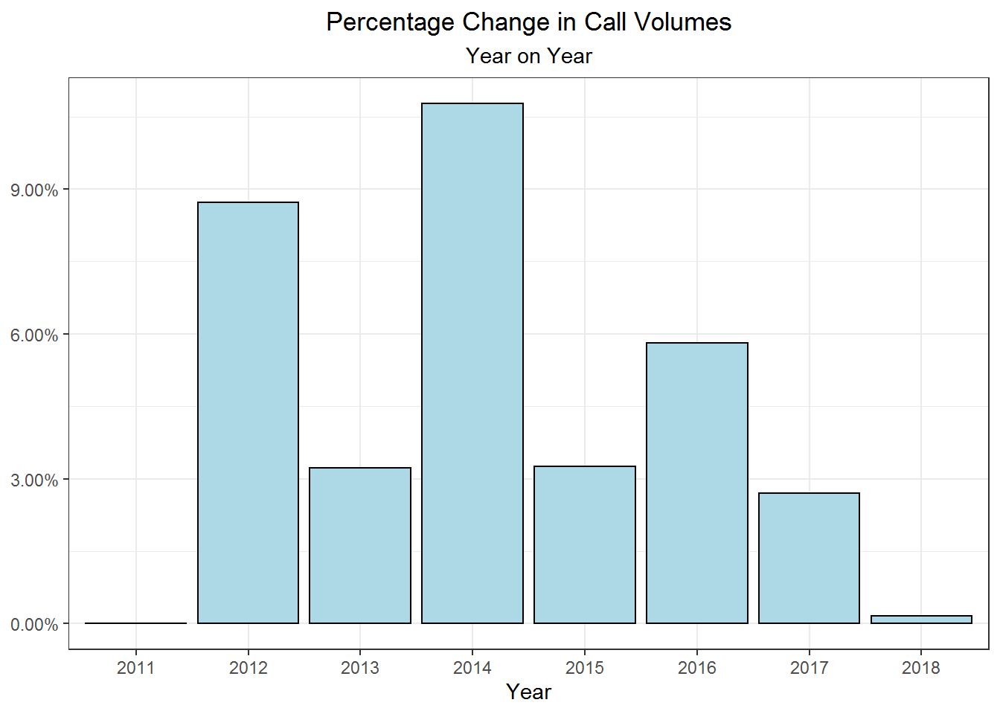

Call Volume Analysis
# Total calls in a given year with calculated change in percent from previous year
calls_per_year<- call_data %>%
filter(Year != 2019) %>% #Filtered out, only partial data
group_by(Year) %>%
summarise(calls = sum(calls)) %>%
mutate(perc_change = (calls - lag(calls))/lag(calls))
# Minimum and maximum percentage change
min_max <-calls_per_year %>%
filter(perc_change != 'NA')
a <- round(max(min_max$perc_change), 4) * 100
b <- round(min(min_max$perc_change), 4) * 100
# Overall percentage change in calls from 2011 - 2018
x <-calls_per_year %>%
filter(Year == '2011' | Year == '2018') %>%
mutate(perc_change = (calls - lag(calls))/lag(calls)) %>%
select(perc_change) %>%
filter(perc_change != 'NA')
overall <- round(x$perc_change,4) * 100According to the US Census Bureau the population in the city of Denver has a growth rate of 1.6% per year and the city has grown by just under 20% since 2010. As a natural consequence of this growth there has also been a steady increase in EMS calls. While the year on year percentage change in call volumes has fluctuated from a maximum growth of 10.77% in 2014 to a minimum rate of 0.16% in 2018, every year has seen positive growth and there has been an overall 39.71% increase in calls from 2011 - 2018.
# Commented out code generated the table, code not otherwise shown
#call_data %>%
# group_by(Year) %>%
# filter(Year != 2019) %>%
# summarise(Calls = sum(calls)) %>%
# kable(format = 'html', escape = F) %>%
# kable_styling('striped', full_width = T) %>%
# add_header_above(c(" ", "Total Calls "))
# Plot of percentage change in total calls
calls_per_year %>%
replace_na(list(perc_change = 0)) %>% #No percentage change in starting year
ggplot(aes(x = Year, y = perc_change)) +
ggtitle("Percentage Change in Call Volumes", subtitle = 'Year on Year') +
theme_bw() +
theme(plot.title = element_text(hjust = 0.5), plot.subtitle = element_text(hjust = 0.5)) +
ylab(NULL) +
geom_col(fill = 'light blue', color = 'black') +
scale_y_continuous(labels = scales::percent) 
| Year | Calls |
|---|---|
| 2011 | 78262 |
| 2012 | 85088 |
| 2013 | 87835 |
| 2014 | 97293 |
| 2015 | 100458 |
| 2016 | 106292 |
| 2017 | 109164 |
| 2018 | 109342 |
The growth rate in call volumes has slowed in recent years with a negligable increase from 2017 to 2018. Whether or not this will be an ongoing trend remains to be seen. The fact remains there has been an increase in call volume every year since 2011.
This growth in call volume will lead to an increased need for emergency medical personnel and the need to schedule that personnel efficiently to mitigate the needs of the city.
# Creates a table with total calls in a given month for each year (not including partial 2019 data)
month_year <- call_data %>%
mutate(year = format(Date, "%Y"), month = format(Date, "%m")) %>%
filter(year != '2019') %>%
group_by(year, month) %>%
summarise(calls = sum(calls))
# Changing variable types for plotting. Year as the factor, month as numeric so ggplot knows to connect lines between months
month_year$year <- factor(month_year$year)
month_year$month <- as.numeric(month_year$month)
# Plotting calls by month per year, note year is the factor for coloring the lines
month_year_plot <- month_year %>%
ggplot() +
theme_bw() +
theme(plot.title = element_text(hjust = 0.5), plot.subtitle = element_text(hjust = 0.5)) +
geom_line(aes(x = month, y = calls, color = year)) +
scale_x_continuous(breaks = 1:12, labels = c(
"Jan", "Feb", "Mar", "Apr", "May", "Jun",
"Jul", "Aug", "Sep", "Oct", "Nov", "Dec")) +
ggtitle("Total Calls Per Month", subtitle = "Years 2011-2018") +
xlab("Month") +
ylab("Total Calls")
month_year_plot
There are clear seasonal trends in call volumes which could lead to difficulty in optimizing personnel. There is a clear need for increased staffing in the spring and summer months with a decrease in call volume in the fall and winter months.